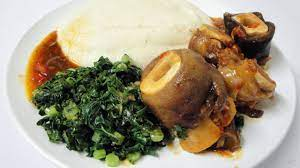

Sadza

Sadza nemuriwo
This is the staple food in Zimbabwe. It is mostly eaten as supper in many Zimbabwean homes.
Ingredients
Steps
- Boil the water
- Pour half a cup meali meal into a pot
- Mix this with cold water
- Now add the hot water into the pot and start stiring
- Stir until it is boiling
- Cover the pot
- Leave to boil for approximately 10 minutes
- Reduce the heat
- Add more mealie meal whilst stiring
- Thats it!